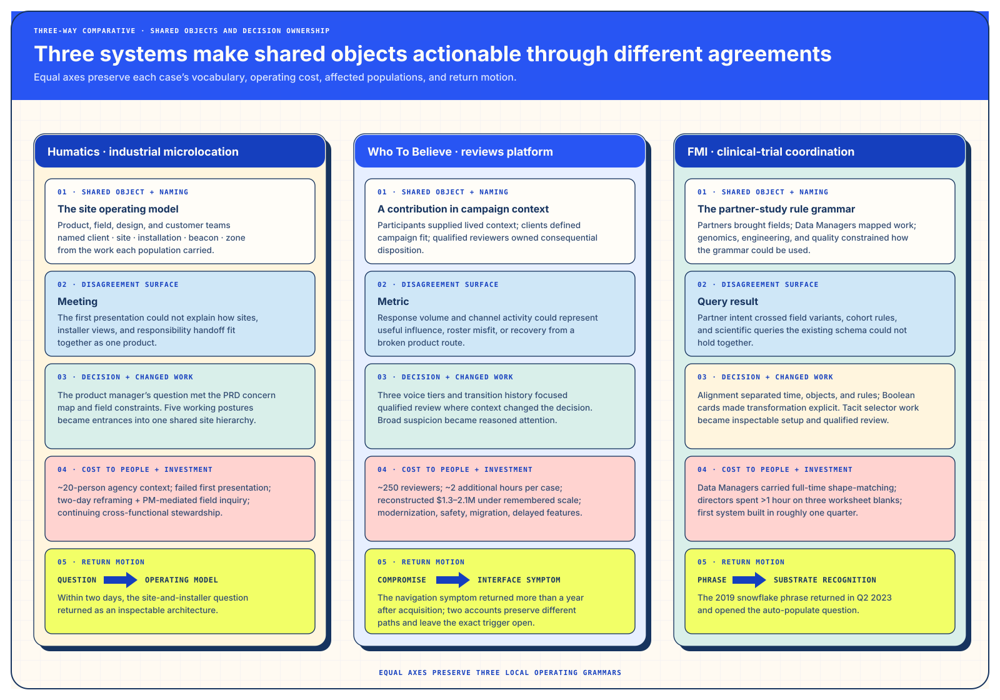
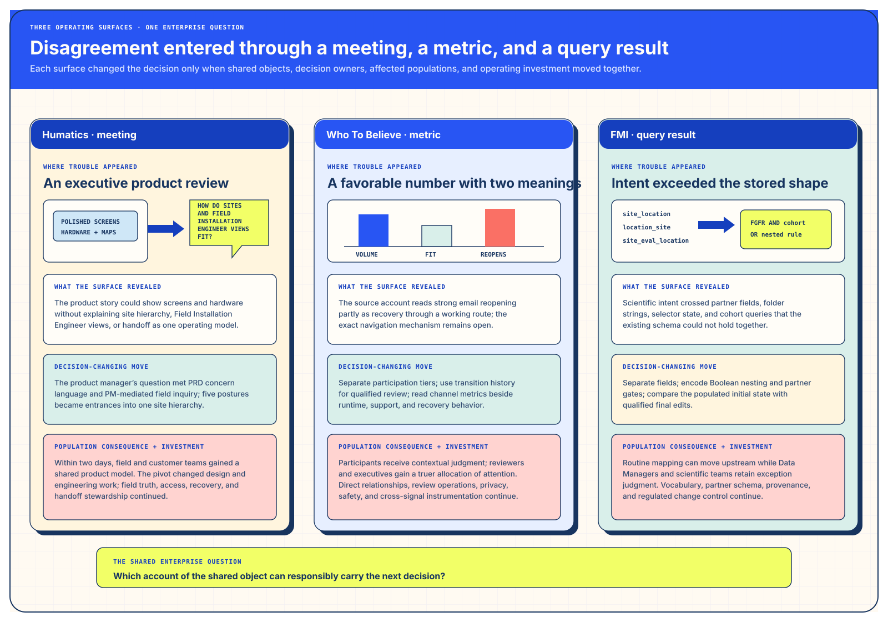

I. Comparative — three cases, five shared questions
Five aligned questions keep each case’s nouns, populations, source qualifications, and residual work together. Across them, competing local accounts become a shared object that can carry a decision.


| Comparative axis | Humatics · coordination grammar | Who To Believe · trust grammar | FMI · executable rule grammar |
|---|---|---|---|
| 1 · What the shared object was, and who was allowed to name it | Client, site, working posture, installation, beacon, zone, coordinate frame, and handoff. Product leadership, agency design/product, field engineering, platform, and customer operations each named part of the operating model. | Contributor tier, household transition, review case, purpose and consent state, regional handoff, and schema authority. Participants, product, review, privacy/safety, engineering, marketing, executives, and the acquiring team carried different truths. | Partner field, atomic predicate, nested boolean group, study template, copy gate, cohort expression, initial state, and human edit. Data Managers, design/engineering, directors, Genomics Insights, and partners named the grammar. |
| 2 · Where the disagreement surfaced — in a meeting, in a metric, or in a query result | A first product meeting: “Who uses the system, across which sites, and how does responsibility pass?” | A metric: response volume and later strong email reopening could obscure contribution quality or a broken product route. | A query result and stalled 2023 call: partner exceptions and remembered field mappings exposed a grammar the upstream contract did not yet carry. |
| 3 · What changed the decision, and what work became possible or unnecessary afterward? | A PRD concern map, five working entrances, shared site hierarchy, and field questions shifted attention from browser polish to the operating model. Planning, deployment, support, and operations could coordinate on one product; separate screen-by-screen product stories stopped carrying the roadmap. | Three voice tiers, transition history, focused human review, purpose lifecycle, mobile capability, and schema characterization joined trust to runtime behavior. Ambiguous cases could receive accountable review; response volume and blanket suspicion stopped acting as the default decision rule. | An Alignment Worksheet, boolean cards and nesting, guarded template reuse, partner-shaped payloads, and the human-edit diff made transformation inspectable. One grammar could serve setup, investigation, and later automation; housing, database, and primary-user debates stopped blocking the redesign. |
| 4 · What the fix cost the people doing the work, stated plainly | A roughly 20-person agency context absorbed a failed first presentation, a two-day cross-functional reframing, PM-mediated field inquiry, and continuing product, field, platform, support, and customer-operations stewardship. | I recall roughly 250 reviewers and about two additional hours per reviewed case. A reconstructed model places review cost at $1.3–$2.1M under those remembered scale assumptions; modernization, privacy/safety work, instrumentation, migration, and delayed features added organizational load. | Data Managers carried full-time shape-matching; directors spent more than an hour aligning on three worksheet blanks; design and research shadowed and fanned out users and built SVG/foreignObject, DynamoDB, and LucidChart research artifacts; engineering delivered the initial system in roughly one quarter. |
| 5 · What returned afterward — every one of the three has a return motion | The strategic question re-entered within two days as Choose Your Player and the shared site hierarchy. Current field, authority, and recovery contracts carry the concern forward as present-day extensions. | More than one year after acquisition, a hamburger path reappeared in the live experience. The active and archived accounts describe different mechanisms; incident evidence leaves open whether they describe separate incidents or synthesis drift. | A 2019 “special snowflake” phrase re-entered a Q2 2023 meeting and revealed the existing boolean surface as an ETL domain-specific language. |
The disagreement surface changes what can be seen
A meeting exposes incompatible operating models. A metric can compress several causal stories into one number. A query result exposes the distance between visible vocabulary and upstream structure. The intervention begins by choosing a representation that can hold the kind of disagreement actually present.

